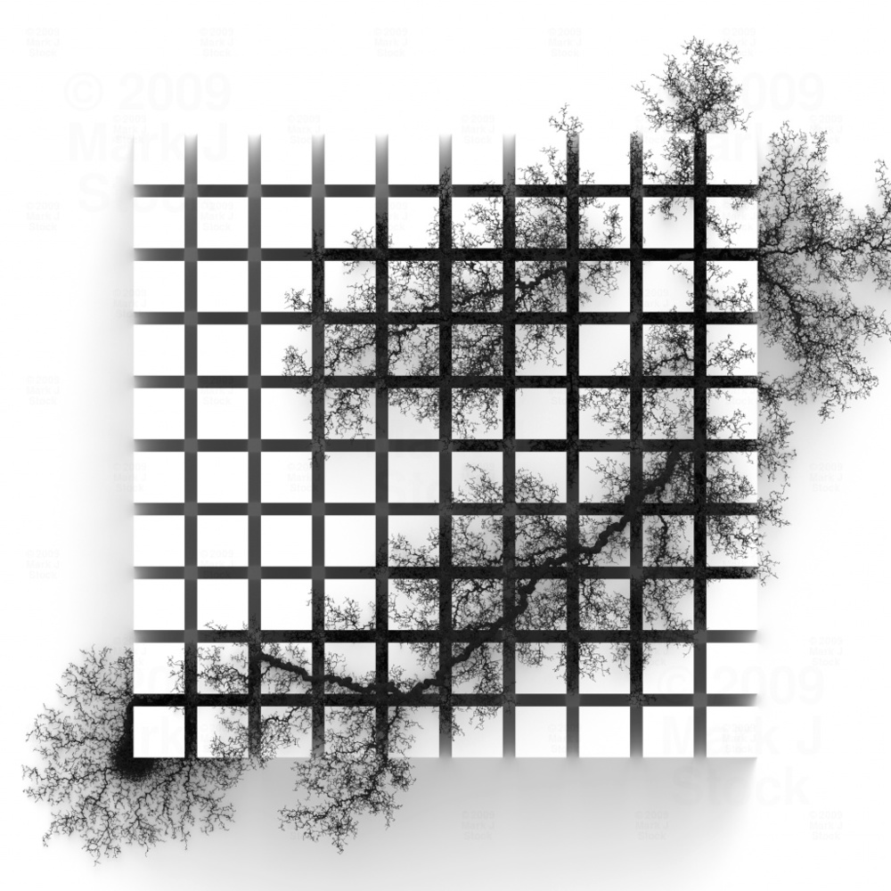
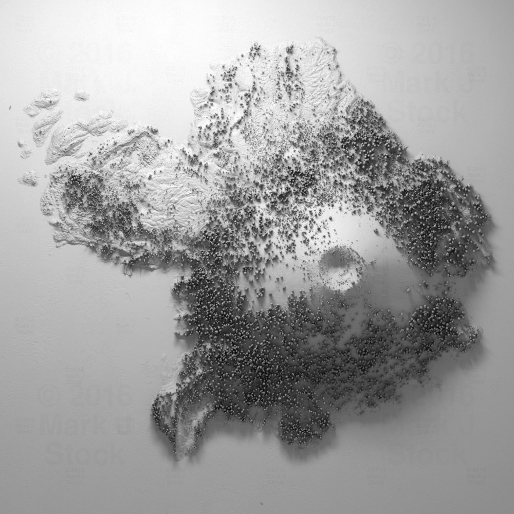

A1 |
A2 |
A3 |
A4 |
A5 |
A6 |
A7 |
A8 |
A9 |
|
About:Mark J. Stock is a scientist and artist who uses programming to create animated and still images. |
IMMACULATE COLLISION |
DENDRITE This work allows shapes to self-generate, and self-perpetuate starting from a set of rules and an initial world. It can take millions of iterations for a pattern to emerge. |
LAND This work is a result of a direct translation of digital elevation data in which white references the highest surface elevation, and black the lowest. This brings forth patterns that would not normally be seen from a regular view. |